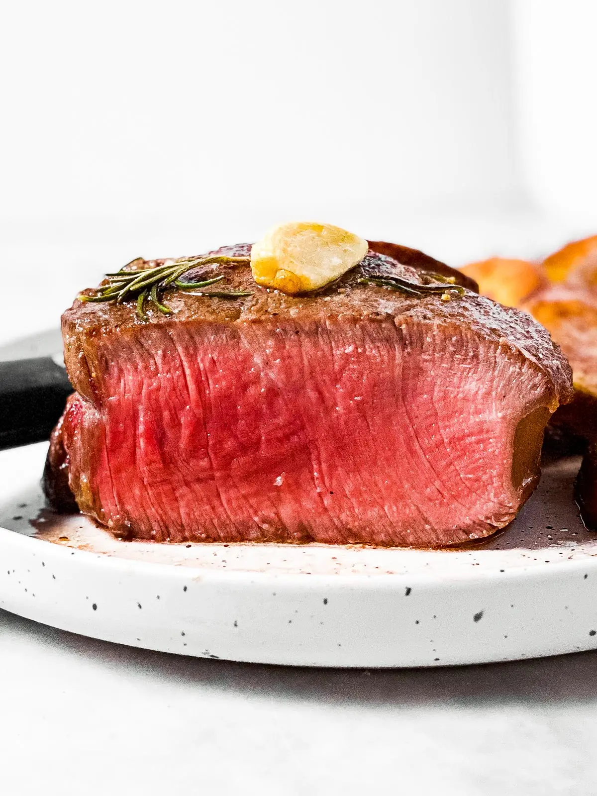

Filet Mignon
- Total time1 hr 30 mins
- Serves2
- Ingredients6
- Steps4

Ingredients
- 2 Filet Mignons see notes for size recommendations
- salt & ground black pepper to taste (season generously!)
- 1 tablespoon oil
- 2 tablespoons unsalted butter
- 5 cloves garlic peeled
- 4 sprigs fresh rosemary
Directions
- Prep: Remove fillet steaks from fridge 30-60 minutes before preparing. Unwrap, season and let sit on a plate on the counter. For best results, do not skip this step. Season both steaks with salt and pepper.
- Sear: Once ready to cook, heat oven to 360°F. Place a medium cast iron skillet over high heat for 3-5 minutes. Once hot, carefully add oil (watch out for splatters). Sear the Filet Mignon for 2-3 minutes per side (1-2 minutes for Petite Filet Mignons), until browned with a nice crust. Immediately remove skillet from heat.
- Finish: Carefully add butter, garlic and rosemary to skillet. Place skillet in oven and bake for 2-8 minutes, depending on preferred doneness (see notes for internal temperatures; remove skillet from oven once internal temperature is 5-10°F below desired temperature). As a rule of thumb, 5 minutes will yield fillet steaks cooked to about medium. 3-4 minutes will yield medium-rare fillet steaks. 2 minutes will yield rare fillet steaks. 6-7 minutes will yield medium-well and 8 minutes well-done fillet steaks. The exact timing depends on your exact Filet Mignon weight and thickness.
- Rest: Remove steak from skillet and place on a plate. Tent with foil, then rest for 5-10 minutes (do not skip rest). Serve with garlic cloves and butter from skillet.
Recipe credit: savorynothings.com